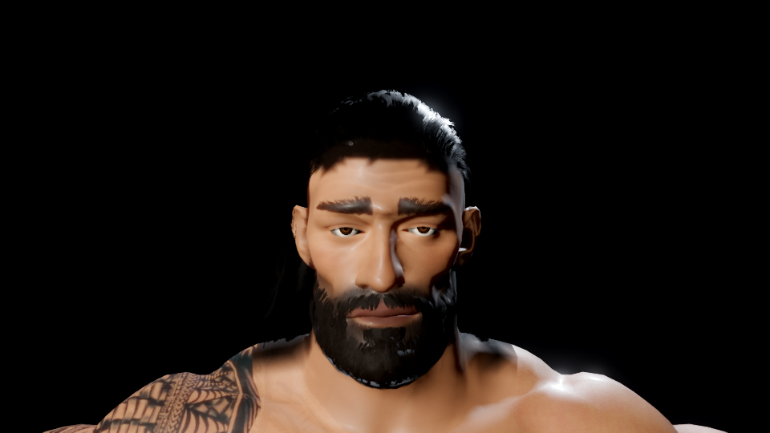
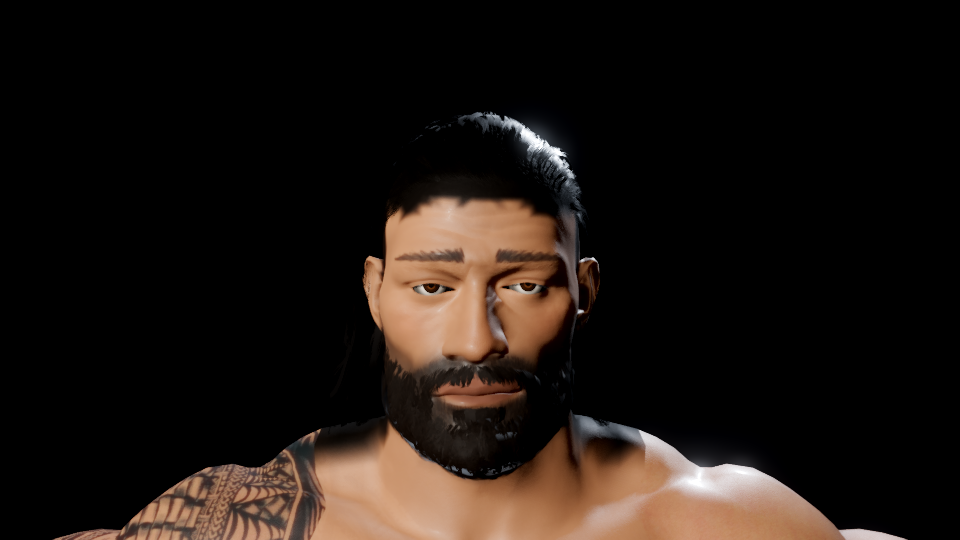

Fuller cheeks and jaw, a less pronounced brow, finer eyebrows, revised skin response and corrected eyelid construction. This is an incremental likeness pass.
Reference likeness is still below target. Fine facial forms, skin detail and the main hair/beard cards remain major gaps. These are Godot Forward+/software Vulkan studies, not Mac frame-rate evidence.


After · face checkpointBefore · 3405825Identical cameras and key/back lights; bind pose, eyelids held open for the final studies. Image files are unchanged. Drag the slider to compare. Open before · Open after.
The full model at 35% through Roman_Stand and Walk_Slow_Look. These diagnostic lights differ from the entrance. Each camera was allowed to settle at the paused sample. Six stills cannot establish motion quality.
All copied images have SHA-256 hashes in the manifest. Camera/renderer settings: before · after. See the review notes and validation record. Native M1 Pro appearance and steady 60 fps acceptance remain open.